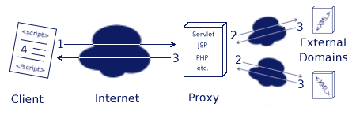

-
CONTENTS
-
What files do I need to include to use the server-side proxies?
-
How can I load XML data from outside my own domain?
-
Can I use this same API to load XML data from my own domain?
-
How does this API work?
-
What browsers does this API work with?
-
How do I use this API from JavaScript?
-
xmlIOProxyLoadData
-
xmlIOProxyGetLastLoadStatus
-
What do I have to do on the server side to use this API?
-
What server-side proxies come pre-built with XML for <SCRIPT>?
-
How do I configure the proxies?
-
Building your own server-side proxies
-
Licensing for custom server-side proxies
-
Java Proxy Reference Distribution
What files do I need to include to use the server-side proxies?
To use XML for <SCRIPT>'s server-side proxies, you need to include xmlIO.js and xmlEscape.js from
the jsTools directory.
How can I load XML data from outside my own domain?
In many cases, it is useful to load XML from another file on your web server or
from another web server entirely and manipulate it with XML for <SCRIPT>. With JavaScript,
the former is possible with a little effort. However, the latter is impossible due to the
JavaScript security sandbox your code must live in. This makes it impossible, for example,
to load and manipulate an external RSS news stream directly from JavaScript.
XML for <SCRIPT> attempts to make both loading files from your server and from external
servers both possible and simple. It does this by abstracting the many different methods
for browser-server communications in a simple-to-use API. To allow for XML to be loaded
from external domains, XML for <SCRIPT> provides a number of server-side proxies that
load the external XML on behalf of the JavaScript and returns it to the browser in such
a manner that reading and manipulation is possible.
Can I use this same API to load XML data from my own domain?
Absolutely! Simply add the file you want to your proxie's list of available data sources
and access it just as you would any other data source in the list.
Beginning with XML for <SCRIPT> 3.0, you may also use XML for <SCRIPT>'s
xmlIOLoadLocalData
API to load data from your own domain without having to use a server-side proxy. This API
can also be used to load XML data from the client's file system if your web application
is running (for example) off of a CD-ROM.
How does this API work?
The JavaScript security sandbox is very strict. If the data on a page or frame did not
originate from the same domain as the script, programmatic access to that data
is denied. This domain restriction presents severe
limitations to developers trying to load XML data streams such as RSS data feeds and
legitimately integrating them into their site.
This API works by "fooling" JavaScript into thinking the data being loaded originated
from the same domain as the script. To accomplish this task, XML for <SCRIPT> uses two pieces of software:
a client-side JavaScript API and a server-side proxy. Rather than JavaScript
accessing the external data directly (resulting in innaccessible data), the JavaScript
instructs the proxy server to fetch the data and return it on its behalf.
Since the proxy server resides inside your web server, you control what domains it can access.
Assuming you've allowed access to the external data being requested, the proxy server fetches
the data and returns it to the client in a package the JavaScript API understands.
The "magic" behind the process is this: Even though the
data being returned to the JavaScript originated from outside it's domain, what actually
returns the data to the JavaScript (the proxy) resides
inside it's domain. As a result, full and unrestricted access to the returned data
is granted.
To help clarify this process, the steps performed to load external data are generalized in the following
graphical example.

1. JavaScript client calls proxy server and asks for external data
2. Proxy server connects to external data source and fetches the data
3. Proxy server packages the data and returns it to the JavaScript
4. JavaScript reads and manipulates data with unrestriced access
What browsers does this API work with?
Please be aware of some browser compatibility issues using this API. This API is compatible with
Netscape 6.x and above, Mozilla, Internet Explorer 5.2 (Mac OS X), Internet Explorer 5.5 (Windows),
Opera 7, Safari 1.0+ and Konqueror versions 3.01 and above.
The following browsers are known *not* to work with this API:
-
Internet Explorer 5.0
-
Konqueror 2.x
-
Opera 6.x
The following functions are affected by this limitation:
-
xmlIOProxyLoadData
-
xmlIOProxyGetLastLoadStatus
How do I use this API from JavaScript?
It's actually rather easy. There are only two functions to be familiar with:
-
xmlIOProxyLoadData
-
xmlIOProxyGetLastLoadStatus
These functions are described in detail below.
NOTE: When using the function xmlIOProxyLoadData,
you must include xmlEscape.js from the jsTools directory
into your source HTML file.
xmlIOProxyLoadData
xmlIOProxyLoadData(
<proxyURL>,
<resourceID>,
<callBackFunction>,
<authenticationCode>)
accepts:
<proxyURL>: The URL of the proxy server
<resourceID>: The ID of the resource to retrieve
<callbackFunction>: The function to call when the data is finished loading
<authenticationCode>: Authentication code to the proxy server
returns:
A GUID representing the "thread" that is performing the load operation
xmlIOProxyLoadData is the primary function to call when retrieving data from one of
XML for <SCRIPT>'s proxy servers. Each accepted parameter is detailed below.
proxyURL
The URL to the proxy server. The proxy server you are communicating with must reside
on the same domain and port that the calling JavaScript originated from.
resourceID
For security purposes, the proxy servers contain the master list of available data
that can be retrieved. This list is zero based and can contain as many items as you
would like. The resourceID specifies which resource in this list (beginning with zero)
that the proxy is to retrieve.
callbackFunction
The callback function is a function defined by the JavaScript programmer using xmlIOProxyLoadData.
When functioning properly, this function will be called once the data from the proxy
is fully loaded into the client's browser.
The callback function can be named anything the JavaScript programmer would like to call it,
but it must have a method signature exactly as specified below:
<callbackFunction>(<String1>, <String2>, <String3>)
The first string will either be the XML Data returned by the proxy or an error string.
It will be XML if the third parameter of the callback function is "success". It will be
an error string of the third parameter of the callback function is "error".
The second string will be the GUID for this data request. This GUID can be compared to the GUID
returned by xmlIOProxyLoadData to determine exactly which data request is being returned.
The third string is a success/fail code from the proxy server. It will either be "success" or
"error".
NOTE: If the callback function is never called, more
information about why may be available by calling the xmlIOProxyGetLastLoadStatus method
described in the next section.
authenticationCode
For security purposes, the proxy server will not allow access to any of it's resources unless
the proper authentication code is passed in.
NOTE: In order to protect this authentication code,
It is highly recommended that you use a https (secure) connection when calling xmlIOProxyLoadData.
When using a standard http connection, this authentication code is passed in plain text to the
proxy.
NOTE: If you do use an https (secure) connection, keep in mind
that the calling JavaScript will also have to originate from that same https connection.
Behind the scenes, xmlIOProxyLoadData creates a new IFRAME DOM element inside the browser.
Since each new IFRAME DOM element is treated as a new thread inside the browsers, the call to
xmlIOProxyLoadData will return control back to the calling JavaScript almost immediately.
xmlIOProxyLoadData has been designed to take advantage of this behavior and allow the JavaScript
programmer to load multiple external data streams from the proxy server at the same time. If the
JavaScript programmer wishes to take advantage of this capability, care must be taken to ensure
that the correct JavaScript code for each data stream is called when the data is fully loaded
into the client. To accomplish this, the JavaScript programmer has two options. These options
are outlined below.
Option 1: Separate callback functions
If a limited number of external data streams are being loaded, the simplest manner to ensure the
proper JavaScript code is called upon their return is to specify a different callback function
for each call to xmlIOProxyLoadData.
Option 2: One callback function
If the code to handle all of the returned data streams is similar or the JavaScript programmer wishes
to keep all of the handling code in one function, the GUID returned by xmlIOProxyLoadData can be used
to identify the data stream being returned.
Each call to xmlIOProxyLoadData will return a unique GUID. This GUID is passed to the proxy server and
then returned to the client in callback function. If the GUIDs returned by xmlIOProxyLoadData are
saved in a global list, the data being returned to the callback function can be easily identified by
comparing the GUID returned in the callback function with the GUIDs stored in the global list.
NOTE: JavaScript does *not* serialize the callback function. If
two external data streams are returned at virtually the same time, it is possible that the callback
function will not function as expected. Use care when choosing this option.
Example:
<script type="text/javascript">
var gGUID;
var callbackCalled = false;
function getExternalData(){
//get external data
var pURL = "https://www.myproxyurl.com/proxy";
var resID = "2";
var cbFunction = "myCallbackFunc";
var authCode = "myVeryStrongAuthenticationCode";
//make the call to the proxy server
gGUID = xmlIOProxyLoadData(pUrl, resID, cbFunction, authCode);
//If something goes really wrong, let the user know
window.setTimeout("getError()", 5000);
}
function myCallbackFunc(data, GUID, returnCode){
//ensure the GUID returned is the one we expect;
if (gGUID != GUID) {
alert("incorrect GUID!");
return;
}
//make sure we have valid XML
if (returnCode == "error"){
alert("PROXY ERROR: The error was:\n" + data);
return;
}
//we have valid data. Show it to the user
alert("The XML returned was:\n" + data);
}
function getError(){
alert(xmlIOProxyGetLastLoadStatus());
}
</script>
xmlIOProxyGetLastLoadStatus
xmlIOProxyGetLastLoadStatus()
accepts:
N/A
returns:
String with the last result of the xmlIOProxyLoadData function
If for some reason the JavaScript programmer's callback function never gets called
after an invocation of xmlIOProxyLoadData, more information about why may be available
by calling the xmlIOProxyGetLastLoadStatus method.
After a successful call to the callback function, the xmlIOProxyGetLastLoadStatus will always return
the string "xmlIOProxyLoadData-Called callbackFunction".
The most common reason for the callback function not being called is a misspelled callback function
name in the call to xmlIOProxyLoadData function. In this case, JavaScript cannot call the callback
function. In cases such as these, the error message detailing what went wrong will be returned by
calling xmlIOProxyGetLastLoadStatus.
Example:
<script type="text/javascript">
var gGUID;
var callbackCalled = false;
function getExternalData(){
//get external data
var pURL = "https://www.myproxyurl.com/proxy";
var resID = "2";
var cbFunction = "myCallbackFunc";
var authCode = "myVeryStrongAuthenticationCode";
//set the callbackCalled variable to false;
callbackCalled = false;
//make the call to the proxy server
gGUID = xmlIOProxyLoadData(pUrl, resID, cbFunction, authCode);
//If something goes really wrong, let the user know
window.setTimeout("getError()", 5000);
}
function myCallbackFunc(data, GUID, returnCode){
//set the callback called to true. This ensures
//our window.setTimeout error function knows everything is OK
callbackCalled = true;
//ensure the GUID returned is the one we expect;
if (gGUID != GUID) {
alert("incorrect GUID!");
return;
}
//make sure we have valid XML
if (returnCode == "error"){
alert("PROXY ERROR: The error was:\n" + data);
return;
}
//we have valid data. Show it to the user
alert("The XML returned was:\n" + data);
}
function getError(){
//display the alert message if the callback
//function has not been called
if (callbackCalled == false) {
alert(xmlIOProxyGetLastLoadStatus());
}
}
</script>
What do I have to do on the server side to use this API?
To use this API, a server-side component must be installed on your web server.
This server-side component (proxy) is responsible for actually fetching the
data the JavaScript is requesting.
A number of pre-built proxies are shipped with XML for <SCRIPT>. See the
next section for a complete list. If you use a platform/web server not supported
"out of the box" by XML for <SCRIPT>, full documentation on the proxy solution
is also provided allowing you to build your own solution.
What server-side proxies come pre-built with XML for <SCRIPT>?
Currently, the following server-side architectures have pre-built proxies available:
-
Java Servlet
-
JSP
-
PHP
-
mod_perl
-
.NET
-
ASP
These proxies may be found under the pre-builtProxyServers directory.
How do I configure the proxies?
Each proxy must have the following parameters configured in order to fetch data
on behalf of the JavaScript:
-
A resource list of URLs that can be associated with a zero-based list
-
An authentication code string
-
Matching character sets between the proxy and the web server
NOTE: Having the character set match between the
web server and the proxy's returned HTML code is very important. If the character
encodings do not match (proxy set to UTF-8 and web server set to ISO-8859-1 for
example), unexpected behavior may occur.
NOTE: All of XML for <SCRIPT>'s pre-built proxies
have their HTML's encoding set to UTF-8. If your web server is not set up to
serve content in this character set, you should either adjust your server's configuration
or change the character encoding in the proxy server you are using to match your
web server's encoding.
Each proxy implementation is different, but the designs are similar for all of them.
See the comments in the code for each different proxy for specific configuration instructions.
Building your own server-side proxies
If you are unable to use one of the pre-built server-side proxies, full documentation
is provided in the file "proxyDocumentation.txt" that will allow you to build your own.
This file is located in the pre-builtProxyServers directory.
Licensing for custom server-side proxies
If you build your own server-side proxy for use with XML for <SCRIPT>, you
are under no obligation to return the source code to the main project. Building
your own proxy is simply a matter of implementing a published API, thus your
code does not fall under the terms of the LGPL.
That being said, you are highly encouraged to contribute your source code back
to the main project. That is, after all, how Free Software works.
Java Proxy Reference Distribution
Since SourceForge.net does not allow outbound connections
from its hosting servers, it is impossible to properly demonstrate the interaction of
the JavaScript API and the server-side proxies.
To allow for easy demonstrations, a Java Proxy Reference Distribution has been developed
that includes a pre-configued version of the Apache Tomcat Java web server. This
pre-configured web server contains a version of the Java Servlet reference proxy
that is configured to run the xmlIOProxy test suite.
To install and run the Java Proxy Reference Distribution, perform the following steps:
-
Download and extract the Java Proxy Reference Distribution
-
Copy the entire XML for <SCRIPT> distribution into the webapps/jsproxy/xmljs directory
-
Ensure you have JDK 1.3 (or higher) installed on your machine
-
Set the environment variable JAVA_HOME to the root directory of your JDK
-
In the bin directory, run startup.sh or startup.bat, depending on your platform
-
Point your browser to http://localhost:8080/xmljs/website/testSuites.html
-
Launch the xmlIOProxies test suite and follow the directions on the screen